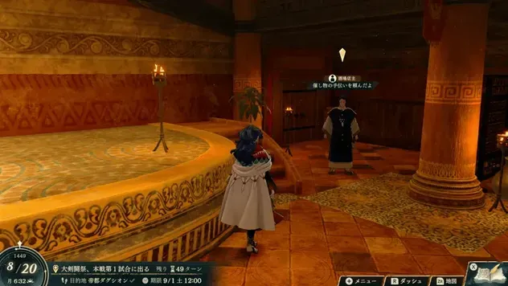

用兴行积攒名声，把咒歌带上战场

查看大图 ↗先接演出，再把报酬变成战力
到鞑古席翁南侧酒馆找店主。地方兴行要在期限内赶到指定地点演出，取得钱、素材与名声，也可能得知秘密地点。
酒馆兴行则要满足指定名声、交齐素材，再回店主处报告。报酬可解锁蕾达的咒歌，也会逐步开放饮品兑换。
咒歌属于蕾达的烈焰技，不同招式可强化同伴或召唤魔兽。看清效果再选，不能把所有咒歌都当成直接伤害。
日文版游戏画面 · Game8 来源 ↗让同伴再行动一次，比自己多打一刀更有用的时候
完成第9章开场对话后，到帝都上层游兴区接取「舞者的继承者」。期限为1449年10月15日；不要等到离开第一部再补。
- 1
取回委托物
到拜纳绿洲市场购买任务指定植物 ×1，1050G；也可探索取得。日文来源名「ヒンガシャ」，请按任务标记核对，避免买错同类素材。
- 2
回报，取得舞姬项链
完成委托后开放舞者资格。蕾达准备剑术B或弓术B，再到资格考试处办理转职。
- 3
把行动交给当前最需要的人
舞者的「跳舞」让选中的同伴再行动一次：补一次治疗、追加击杀或调整站位。第一部限定蕾达，第三部才开放给其他角色。
穆与巴卡尼亚顶住正面，蕾达决定下一步
剧情与教学队友单独列出。箭头是培养方向，不要求练满每个职业；仍须满足进度、技能与考试条件。

蕾达
高速输出／弓系支援用斗士、土匪、勇士补力量，或在第9章解锁后转舞者，把行动交给更适合当前目标的主力。
培养重点
剑或弓选一条主攻方向。想让蕾达当舞者，提前把剑术或弓术练到B；完成“舞者的继承者”后参加考试。
留意 舞者是另一条功能路线，不要求先练满勇士。跳舞提供队友再行动，与35级个人技能的条件追加攻击分开计算。
第三部再规划的转职
候选：探影者。 对应剑术 A 或弓术 A 的考试方案；以考试界面要求为准。

穆
近战物理输出可靠近战输出，能减少主角独自承担击杀的压力。
培养重点
蕾达线初始可用；优先斧／近战路线与力量，先完成可靠击杀再考虑兼修。 土匪 → 勇士方向可持续补物理输出。
留意 别为尚不需要的传送把早期训练全拆散；跨线招募另需古尔毛萨 ×3。
第三部再规划的转职
候选：战斗将领；需要传送职能时再考虑武僧。 前者按格斗／斧／剑 A 方案；后者需投入白魔术 A，养成成本不同。

巴卡尼亚
物理壁垒／保护后排物理承伤位，让较脆的输出与法系有安全行动空间。
培养重点
优先重装与枪或斧中的主武器，负责接住物理攻击。 重装步兵 → 巨型重甲兵方向，给蕾达和法系队友留安全位置。
留意 被攻击时伤害降到原来的 90%，并非减伤 90%；仍需防范魔法和集中攻击。
第三部再规划的转职
长期候选：要塞。 重装 C＋斧 A 或枪 A；按阶段开放考试。

西洛可
魔法输出／灵活补位早期辅助回复，之后可转向魔法输出或剑魔混合。
培养重点
先满足队伍的回复需求，再把黑魔术作为输出主轴。 萨满巫师 → 先知方向；需要剑魔混合时再分配剑术训练。
留意 剑魔双修成本更高；战后自身回复不等于能独自扛住敌群。
第三部再规划的转职
长期候选：高阶墓志铭（暂译），或专注黑魔术的德鲁伊。 前者需马术 D、黑魔术 D、剑术 B及第三部神殿委托；后者黑魔术 A。
先养眼前的主力，再为下一个缺口招人
本篇资源优先给谁
穆负责稳定的物理击杀，巴卡尼亚承伤，西洛可先兼顾回复； 奥林匹亚加入后让她接手治疗。
奥林匹亚加入后让她接手治疗。 古扎岚门槛低，但和
古扎岚门槛低，但和 卡塔妮雅同为剑位，按需要挑一位主练。第7章可补弓手
卡塔妮雅同为剑位，按需要挑一位主练。第7章可补弓手 基罗伊卡；想补法术伤害，提前准备
基罗伊卡；想补法术伤害，提前准备 菲亚娜的3000G。
菲亚娜的3000G。
更早决定兵种与技能
想长期培养的人，出现且条件达标后即可安排入队。实际入队等级越低，后续能由你选择兵种的升级次数通常越多。
门槛、时点、交涉要一起看
低名声不保证低等级，也不保证前几章就能遇见。金字塔列的是门槛，人物卡还会单列出现时间与附加条件。
按名声找人，按队伍缺口做选择
先看全线分层，再读名声3—6的培养卡。教学加入的同伴在上方介绍，不重复放入金字塔。
本线招募金字塔
每层列出从这一名声门槛开始可考虑的人物。升到更高名声后，低门槛人物仍可招募；还要满足支援、出现时间及交涉要求。
名声 3
1 位名声 4
2 位名声 5
4 位
名声 6
4 位
名声 7
7 位


名声 8
7 位


名声 9
4 位


名声 10
7 位


层级宽度只区分名声门槛，不表示战力或人数。★ 是本站按加入成本、培养时间及队伍缺口给出的建议，点击人物查看理由和完整条件。
名声 3—5 · 先准备这些人
古扎岚
较易取得的剑系输出名声 3 · 支援 1
达到门槛后对话；来源未列额外物品要求。
 凯伊线教学加入；蕾达线 1S／3R 即可尝试。先剑术与命中，填补队伍输出空缺。
凯伊线教学加入；蕾达线 1S／3R 即可尝试。先剑术与命中，填补队伍输出空缺。
培养重点
先剑术与命中，剑客到侍道持续补物理输出。已有多名剑手时选一位主练，把其他击杀留给弓手或法师。
留意 概率触发的个人技能只算额外收益，不能作为存活或击杀的必需条件。
第三部再规划的转职
候选：刀剑将领。 剑术 A，且需第三部战神的委托解锁。
基罗伊卡
弓系收尾／可选开锁补位名声 4 · 支援 1
交圣水 ×3。
弓术擅长、速度与技巧较高；暴虐仅对异常状态敌人提供攻击+3、必杀+10。先看实际伤害与命中，不把异常或必杀当击杀保证。
培养重点
先专注弓术；需要探索可改恶棍，完成本线「新商品兴行4」后可转游侠。缺机动时才补马术转森林骑士。
留意 蕾达已承担探索时，不必重复投入恶棍；注意魔法与近战围攻，Lv35的概率技能不作必杀保证。
第三部再规划的转职
第三部可选探影者（弓／剑A）；已练马术时可考虑弓骑士（弓A＋马D，另需完成对应神殿委托）。

贾斯敏
重装承伤／反击名声 4 · 支援 2
支付500G。
被攻击时有命中加成，适合守狭口，但会与巴卡尼亚重叠。
培养重点
重装配合斧或枪专精，走重装步兵、巨型重甲兵；用反击磨血，保留治疗覆盖。
留意 本线第7章才出现。慢速重装要避开法师、特效武器和集中攻击。
第三部再规划的转职
第三部可考虑要塞；先满足解锁与考试要求，不提前分散第一部训练。

札可捏
斧系命中／物理输出名声 5 · 支援 2
依次拒绝10000G、1000G、100G，最后付10G。
持斧有命中加成，交涉能压到10G，招募资金门槛很低。
培养重点
斧术作为主轴，选斗士、土匪、勇士补力量；给他可靠的击杀机会。
留意 招募便宜不代表没有训练成本；已有足够近战时无需再练一个同职能主力。
第三部再规划的转职
第三部可考虑战斗将领；先满足解锁与考试要求，不提前分散第一部训练。
菲亚娜
魔法输出／兼顾回复名声 5 · 支援 3
支付3000G。
魔力成长适合后排输出，可补蕾达队伍的法术伤害。
培养重点
先按缺口集中黑魔术，萨满巫师 → 先知可作输出；更需要治疗时改以白魔术为主。游唱诗人已解锁时可考虑机动攻疗；尚未解锁则可完成本线新商品兴行4开放。
留意 交涉需3000G。省治疗次数只在魔法回复队友时按幸运概率触发；物理耐久与速度不是长项，回复后也要避开敌人物理攻击范围。
第三部再规划的转职
想保留黑白魔术与机动，第三部完成茱拉委托后可考虑魔法骑兵终职，具体名称与备考见完整档案；专注治疗可选贤者，但转职后不能用黑魔术。

洛蕾塔
高速剑系／轻甲收尾名声 5 · 支援 3
交铁剑 ×3。
满血时有攻速优势，适合持续得到治疗的剑系输出位。
培养重点
先剑术，剑客、侍道承接输出；按实际攻速选剑，不为高面板强行用重剑。
留意 交铁剑 ×3。先看队伍是否缺剑系输出；选择飞行方向时，需要另分配飞行训练。
第三部再规划的转职
第三部可考虑圣天翼兵；先满足解锁与考试要求，不提前分散第一部训练。
名声 6 · 看缺口再投入

艾丝梅拉尔达
物理承伤名声 6 · 支援 3
完成“艾丝梅拉尔达的请求”，回报后再招募。
需要第二位重装时再招；已有巴卡尼亚能守住战线，就把训练优先给远程与法术。
培养重点
枪或斧选一项主练，并补重装。重装步兵目标：主武器 C、重装 E+；投枪用于扩大接敌选择。
留意 碰到法师先看伤害预览； 歌利亚也偏物理承伤，不必只为堆坦克同时重投两人。
歌利亚也偏物理承伤，不必只为堆坦克同时重投两人。
第三部再规划的转职
第三部：要塞，重装 C，另需枪术 A 或斧术 A。

米迦艾拉
斧系近战名声 6 · 支援 3
支付3000G。
邻接作战有命中加成，适合补一位近战斧手。已有足够物理输出时，可以少占些训练资源。
培养重点
先练斧术，向中级所需的斧术 C 推进；用命中稳定的武器和战技，再逐步换重斧。
留意 与已有斧手职责接近，先看伤害与命中缺口再投入；本线交涉按3000G准备。
第三部再规划的转职
第三部：战斗将领，依剑、斧、格斗术 A 的考试方案选择。

伊欧
最早准备的骑兵名声 6 · 支援 1
支付1500G。
本线需要名声6和1500G。想补骑兵机动时再投入，不照用小迪线名声3、800G的条件。
培养重点
先练枪术与马术，沿轻骑兵 → 荣光骑士准备；考试技能、票证和通过率以当前存档界面为准。骑乘先手能发挥个人能力。
留意 防御收益有骑兵、先手条件，别当成敌方回合常驻护甲；第 4 章出现不等于当场已达门槛。
第三部再规划的转职
第三部：奥利哈铁骑，马术 B，另需枪术 A 或剑术 A。
本线完整招募条件 · 36 位，按名声升序 ＋
S＝支援，R＝名声。不含上方剧情与教学同伴；未展开的交涉条件不表示没有要求。
第10—11章 · 4篇外传日历
只列本篇能接的外传，按首次开放日期排列。日期均为游戏内1449年；接取窗口结束后，即使完成期限未到，也可能接不到任务。
每篇基本奖励均含 20,000G ＋ 名声150，另有下列道具。完成外传只满足部分招募条件，不会自动招来相关人物。第三部的条件加入另行标注。
被抹去之民的女王

可接取10/5—10/14
完成期限10/17
去哪里接 帝都 · 市街东北侧
关系到 莎兰的招募与第三部第二区分的阿纳托莉娅加入。护送平民的脱离人数还影响追加报酬，尽量全员救出。
莎兰的招募与第三部第二区分的阿纳托莉娅加入。护送平民的脱离人数还影响追加报酬，尽量全员救出。
打法、接取提醒与资料来源
向市街的阿纳托莉娅接取，之后前往白鸦台；预留帝都外的移动时间。
- 护送仍可行动的平民到地图北端的2格出口，再让阿纳托莉娅最后撤离；有3名平民被击倒就会失败。尽量全员救出，额外报酬会随脱离人数变化。
- 击倒红色特殊敌人（ディガンマ）可让中央首领停止行动1回合。护送队接近首领时，尽量逐回合安排击杀，别在同一回合把可用的红色目标一次清光。
- 平民被首领范围攻击打到后会陷入错乱、停止跟随。让附近任一友军贴邻，使用「呼びかけ」解除；护送队旁留人接应。
- 平民不会使用传送阵。阿纳托莉娅担任领队时不要独自传送，否则平民仍会沿路追赶她，可能闯入危险区域。
窗口按腾讯共创表核对；完成期限由单篇攻略补充。标题为本站中文整理，便于识别任务人物。
大逃脱
可接取10/16—10/22
完成期限来源未单列
去哪里接 帝都 · 市街
完成是 蒂亚拉招募条件之一；仍需满足名声、支援并准备交涉费用3000G。凯伊本人不会因此加入本篇。
蒂亚拉招募条件之一；仍需满足名声、支援并准备交涉费用3000G。凯伊本人不会因此加入本篇。
打法、接取提醒与资料来源
在帝都市街接取凯伊相关外传。
- 击败敌将盛托利翁即可过关，但敌人进入左下方黄色目标区域也会导致失败。先保住通道，再把主力火力集中到敌将。
- 破坏香炉可伤害周围3格内的敌人并降低其移动力。可留一名射程或机动性较好的单位负责香炉，趁敌人聚集时拖住追兵。
来源未单列完成期限的条目，不推定它等于接取末日。接到后查看游戏任务栏，并尽早完成。
窗口按腾讯共创表核对；完成期限由单篇攻略补充。标题为本站中文整理，便于识别任务人物。
封印的过去

可接取10/16—10/29
完成期限11/1
去哪里接 帝都 · 大斗技场前广场
蕾达篇完成后，还要等迪托利希队败退并满足其他交涉条件，才能招募 法比奥。
法比奥。 赛奥朵拉篇虽能做此外传，却不能招募法比奥。
赛奥朵拉篇虽能做此外传，却不能招募法比奥。
打法、接取提醒与资料来源
找法比奥接取，再前往帝都西南的昏暗洞窟；可用车站缩短路程。
- 守住后方蓝色目标区域10回合即可过关；杂兵会持续增援，不必向地图深处追求全灭。敌潮间隙先回复，并留意武器耐久。
- 三路敌人类型不同：左侧步兵可用远程单位处理，中央骑兵用枪兵应对，右侧飞行敌人交给弓兵。回合结束前尤其检查飞行敌人能否越过防线。
窗口按腾讯共创表核对；完成期限由单篇攻略补充。标题为本站中文整理，便于识别任务人物。
未了的心愿
可接取10/18—10/25
完成期限10/27
去哪里接 帝都 · 克蕾尔神殿分殿前
关系到 迪雅各的招募，以及第三部第二区分奥尔赫尔的加入。凯伊篇只有两天可以接取。
迪雅各的招募，以及第三部第二区分奥尔赫尔的加入。凯伊篇只有两天可以接取。
打法、接取提醒与资料来源
向神殿分殿前的奥尔赫尔接取；接下后及时出城完成。
- 胜利条件是歼灭敌军。若要使用投石器，南北两处发射装置必须在同一己方阶段操作；先安排两边都能到位的人手，再启动。
- 投石器发射后会出现增援。启动前先回复、清理近身威胁，并给后方留应对飞行敌人的弓手；战力不足时先集中清路，别为抢机关让单位孤立。
- 东南侧宝箱可取得圣水，附近敌人持有开箱所需钥匙。想拿奖励就让南侧小队清敌后及时回收，别在全灭收尾前忘记开箱。
窗口按腾讯共创表核对；完成期限由单篇攻略补充。标题为本站中文整理，便于识别任务人物。
错过时可考虑在方尖塔之间重玩对应章节；重玩仍有流程成本，建议提前留档。查看路线与进度说明 →
蕾达篇的兵种选择
人物卡里的兵种名称现在可以点击。查看备考技能、特殊解锁与精通，再决定要不要绕路练。
把一次行动交给最需要的人
第9章起留意舞者继承支线；酒馆兴行还关联游唱诗人。蕾达转舞者之后，优先考虑让谁再行动，别只比较她自己的伤害。
输出与回复由同伴接住
这些是本线选职建议，不是固定转职链。最上级、神将放到第三部规划；在其他路线解锁过的资格，也要以当前存档考试列表为准。
兵种资料库 · 按阶段与职能查找 →